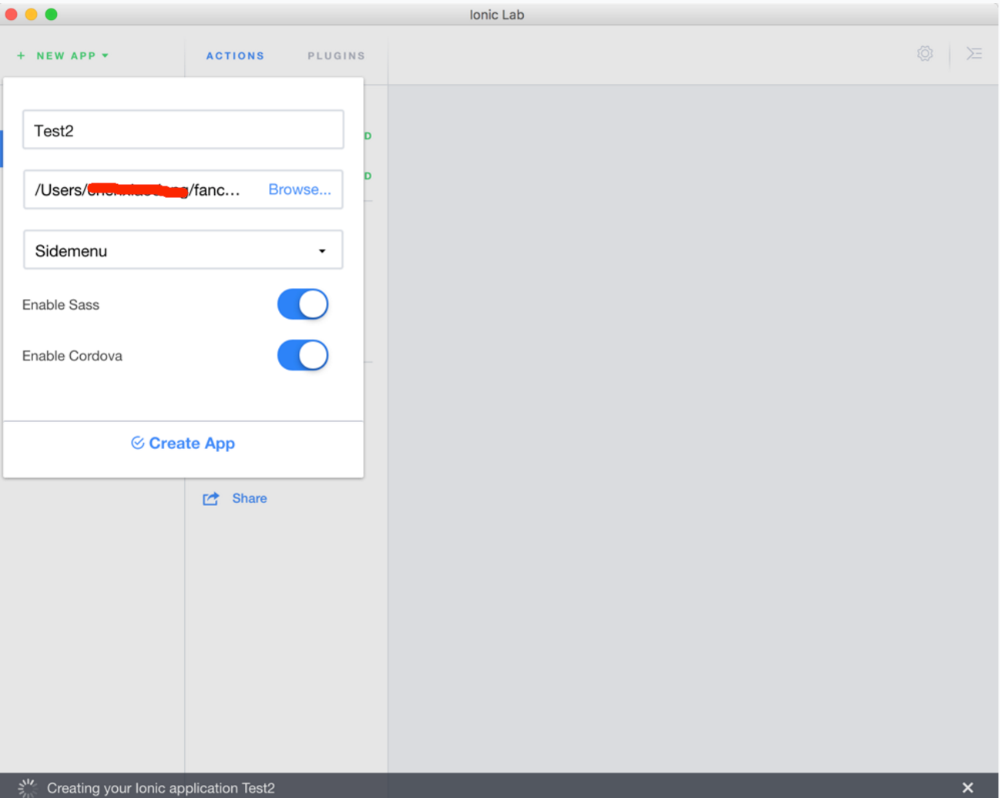

#Web app开发
##认识cordova
[百度百科]Cordova提供了一组设备相关的API，通过这组API，移动应用能够以JavaScript访问原生的设备功能，如摄像头、麦克风等。
Cordova还提供了一组统一的JavaScript类库，以及为这些类库所用的设备相关的原生后台代码。
Cordova支持如下移动操作系统：iOS, Android,ubuntu phone os, Blackberry, Windows Phone, Palm WebOS, Bada 和 Symbian。
cordova与phonegap有什么关系？
摘自http://www.cnblogs.com/zhoujg/p/4534932.html
phonegap继续成长，在2011年10月，整个Nitobi团队被adobe收购，PhoneGap的项目主管Brian LeRoux指出开源PhoneGap的决定在Adobe收购Nitobi之前就做出了，由于Adobe现在拥有PhoneGap商标，他们不得不换个名字，第一个选中的名字是Callback，毫无创意，因此再改一次，产品现在叫Apache Cordova。随后adobe把 phonegap送给了apache软件基金会，接着apache把phonegap改名为cordova，cordova是Nitobi团队当时坐落的街道名称，用此名来纪念Nitobi团队的贡献。
所以Apache Cordova是从PhoneGap中抽出的核心代码，是驱动PhoneGap的核心引擎，你看着两个官网风格多差不多。
##认识SASS
官网地址http://www.sass.hk/
专业级CSS预处理器：成熟稳定，功能强大。
一、概要：
sass是采用的Ruby语言编写的一款css预处理语言。
sass从第三代开始，放弃了缩进式风格，并且完全向下兼容普通的css代码，这一代的sass也被称为scss。
sass基于Ruby语言编写，所以编译sass文件需要Ruby环境。我们使用sass并不需要过多了解Ruby语言，只需要安装Ruby环境即可。
Bootstrap 的源码是基于最流行的 CSS 预处理脚本 -
Less 和 Sass 开发的
##使用ionic lab开发web app
下载地址：http://lab.ionic.io/

操作并不复杂，使用ide的好处相对命令来说可以预览视图。
但是不近如人意的是，发现该ide并不好用，有很多bug，比如我直接想Run on Android的时候，一直提示我ANDROID_HOME环境变量没配置，可是我确实有配置，在网上搜了半天，各种问题的版本各种答案，反正最后也没解决！
不过ionic生成的项目会创建android工程，然后build成功之后再build目录下可以找到apk，直接用命令装apk到手机上体验一下，还是挺不错的。
工具也就说这么多，其实开发ionic最重要的地方是代码了，用sublime足够了感觉，配合一些命令build下就好了。
ionic不好的地方是，生成的android工程里的build.gradle太旧了，应该好久没更新了，导致build时候有时候会出问题。
|
|
决定自己重写一遍，不用自动生成的build.gradle配置，并且将ionic生成的android工程手动导入到as中去
步骤一、导入CordovaLib
习惯先导入库工程，修改库工程里的build.gradle配置，然后import moudle到工作目录中去。
中间可能会遇到些问题，如果你配置的build.gradle的compileSdkVersion是23的话，由于sdk 23把apache的包给移除了编译的时候会出现找不到相关class。可以选择使用useLibrary 'org.apache.http.legacy'，但是我试着把compileSdkVersion改成19(因为ionic支持4.0以上)，但是发现又出现一个新问题，找不到ClientCertRequest类，在grepcode里(国内的developerandroid够慢)查了下这个类是在android5.0才引入的，好吧，那就改成22，然后编译通过了。
成功导入CordovaLib库工程！
步骤二、导入主工程
导入主工程，同样要修改build.gradle文件，该删的删，该改的改，大刀阔斧的改成自己可识别的配置。
因为导入库工程的成功经验，中间过程省略。。。
最后成功导入主工程，然后迫不及待在as中点击run运行下试试，发现可以直接安装了。perfect！
虽然整个过程看似很麻烦，用ionic lab无法自动运行在手机上调试，但是可以提供了一个预览功能，遗憾的是这个ide还很多bug，比如有两个web app，如果启动了第一个server可以预览修改，关闭掉后启动第二个app的server预览还是第一个的视图，但是点击右上角的箭头打开浏览器预览却可以，可见这款ide做的真心粗糙。
还要吐槽这款ide的是每次操作底部都会出现提示条，必须得手动点击关闭，很不方便。
而且build android的时候出现莫名其妙的问题
我明显配置了，不想说什么了~~~~
算了，开发ionic还是用lab的预览功能，用sublime编辑，然后控制台进入到项目目录使用gradle 和 gradle assembleDebug生成apk文件，用命令安装到手机或模拟器上调试。最后导入到as中去安装签名发布什么的吧！
web app运行在ios和android上的效果明显有差，在ios上切换界面的时候自带动画，切换更平缓流畅，但是在android中切换的时候比较生硬，感觉直接刷的一下切过去，体验没ios好是真的，不知道这个有没有办法解决一下！